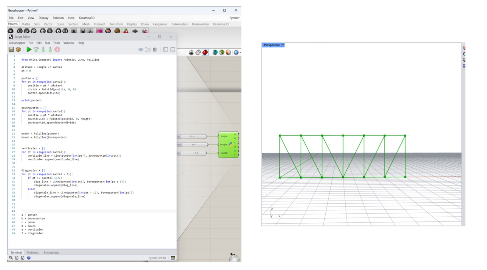

Project
Vakwerk met Python in Grasshopper
Hetzelfde vakwerk als in mijn Grasshopper-script, opnieuw opgebouwd met alleen Python-code in de ingebouwde Python van Grasshopper.

De opgave
Een van mijn leerdoelen was een basis Python-script schrijven, maar ik merkte dat ik er nog niets mee had gedaan. Dat besprak ik met mijn begeleider. Hij gaf mij de opdracht om mijn vakwerk opnieuw te maken, nu met Python.
Het proces
Het lastigste was hoe de Grasshopper-componenten als code werken. Ik testte verschillende manieren en vroeg Copilot om uitleg, maar niet om het script te schrijven. Het script maakt punten onder en boven op basis van de lengte, hoogte en het aantal vakken, en verbindt die met verticalen en diagonalen.
- Video's van mijn begeleider bekijken
- Onder- en bovenpunten berekenen uit lengte, hoogte en aantal
- Verticalen en diagonalen tekenen met lijnen in een lus
- Het resultaat in Rhino vergelijken met het Grasshopper-vakwerk
Het resultaat
Het vakwerk in Python werkt en mijn begeleider vond dat ik het snel had gemaakt. Zijn advies: let op de structuur van de code, vooral op variabelenamen en opmerkingen. Mijn volgende stap is een klein script dat een terugkerende handeling automatiseert.
Aangetoonde leerdoelen
-
1.3
Integreert en prototypeert digitale tools/technieken in innovatieve oplossingen voor opgaven in de gebouwde omgeving.
-
3.1
Stelt meetbare persoonlijke leerdoelen op en stuurt bij op basis van voortdurende kritisch reflectie.
-
3.3
Signaleert technologische innovaties en eigent zich zelfstandig nieuwe tools en werkwijzen toe om de professionele praktijk te versterken.